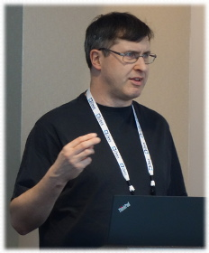

Network filesystem cache-management interfaces
David Howells led a discussion on a cache-management interface for network filesystems at the first filesystem-only session of the 2017 Linux Storage, Filesystem, and Memory-Management Summit. For CIFS, AFS, NFS, Plan9, and others, there is a need for user space to be able to explicitly flush things out of the cache, pin things in the cache, and set cache parameters of various sorts. Howells would like to see a generic mechanism for doing so added to the kernel.
That generic mechanism could be ioctl() commands or something else, he said. It needs to work for targets that you may not be able to open and for mount points without triggering the automounter. There need to be some query operations to determine if a file is cached, how big the cache is, and what is dirty in the cache. Some of those will be used to support disconnected operation for network filesystems.
There are some cache parameters that would be set through the interface as well. Whether an object is cacheable or not, space reservation, cache limits, and which cache should be used are all attributes that may need to be set. It is unclear whether those settings should only apply to a single file or to volumes or subtrees, he said.
Disconnected operation requires the ability to pin subtrees into the cache and to tell the filesystem not to remove them. If there is a change to a file on the server while in disconnected-operation mode, there are some tools to merge the files. But changes to directory structure and such could lead to files that cannot be opened in the normal way. The filesystem would need to return ECONFLICT or something like that to indicate that kind of problem.
Howells suggested a new system call that looked like:
fcachectl(int dirfd, const char *pathname, unsigned flags,
const char *cmd, char *result, size_t *result_len);

He elaborated somewhat in a post about the proposed interface to the linux-fsdevel mailing list.
There were some complaints about using the dirfd and pathname parameters; Jan Kara suggested passing a file handle instead. Howells is concerned that the kernel may not be able to do pathname resolution due to conflicts or may not be able to open the file at the end of the path due to conflicted directories. Al Viro said that those should be able to be opened using O_PATH.
Trond Myklebust asked what would be using the interface; management tools "defined fairly broadly" was Howells's response. Most applications would not use the interface, but there are a bunch of AFS tools that do cache management using the path-based ioctl() (pioctl()) interface (which is not popular with Linux developers). Jeff Layton wondered if it was mostly for disconnected operation, but Howells said there are other uses for it that are "all cache-related"; he said that it was a matter of "how many birds I can kill with one stone".
The command-string interface (cmd) worried some as well. Josef Bacik thought that using the netlink interface made more sense than creating a new system call that would parse a command string. Howells did not want to have multiple system calls, so the command string is meant to avoid that. Bacik said that while netlink looks worrisome, it is actually really nice to use. Howells said he would look into netlink instead.
| Index entries for this article | |
|---|---|
| Kernel | Filesystems/Network |
| Conference | Storage, Filesystem, and Memory-Management Summit/2017 |